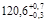
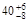
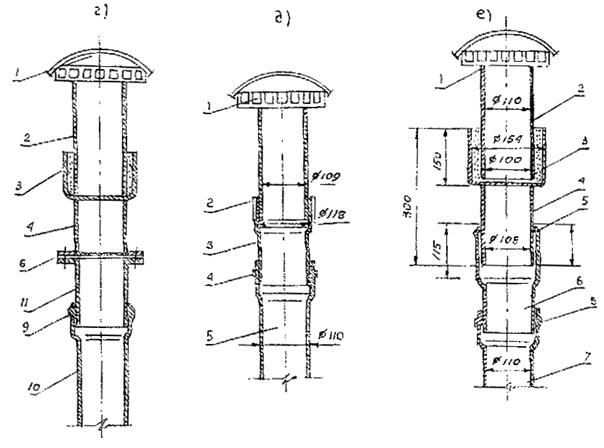

Комплекс перспективного развития г. Москвы
Управление развития Генплана г. Москвы
НИИМосстрой
Мосстройлицензия
ВЕДОМСТВЕННЫЕ СТРОИТЕЛЬНЫЕ НОРМЫ
ПО
МОНТАЖУ СИСТЕМ ВНУТРЕННЕЙ КАНАЛИЗАЦИИ И ВОДОСТОКОВ ИЗ ПВХ ТРУБ В ЖИЛЫХ И
ОБЩЕСТВЕННЫХ ЗДАНИЯХ
ВСН 48-96
МОСКВА - 1997
Настоящие ведомственные строительные нормы разработаны НИИМосстроем по заказу Научно-технического управления Департамента строительства (договор № 2/15-96 от 22.01.96) по теме: переработка инструкции по монтажу систем внутренней канализации и водостоков из поливинилхлоридных труб в жилых и общественных зданиях (ВСН 201-88).
Подготовке новой редакции ВСН предшествовало обобщение десятилетнего опыта изготовления и монтажа канализационных труб и фасонных частей из ПВХ в системах внутренней канализации зданий в г. Москве.
При подготовке новой редакции ВСН использована также техническая информация зарубежных специализированных фирм («Уподур», «Задар» и др.
ВСН согласованы с заготовительными (ОАО «Сантехпром»), проектными (МНИИТЭП, «Моспроект») и строительными (Хорошевский завод ЖБИ, АООТ ДСК-3, ДСК-1, УМЭСТР ГМС) организациями.
В разработке новых редакций ВСН принимали участие от НИИМосстроя:
к.т.н. Сладков А.В., к.т.н. Отставнов А.А., инженер Шехтер Р.Б., Санкова Н.В., от МНИИТЭП инж. Прижижецкий С.И.
Настоящие ведомственные строительные нормы разработаны при участии Мосстройлицензии (Столяров Ю.И., к.т.н. Фельдман В.Д.).
|
Комплекс перспективного развития г. Москвы |
Ведомственные строительные нормы по монтажу систем внутренней канализации и водостоков из ПВХ труб в жилых и общественных зданиях |
ВСН 48-96 взамен |
|
Управление развития генерального плана г. Москвы |
||
|
Мосстройлицензия |
1.1. Настоящие «Нормы» распространяются на производство работ при заготовке и монтаже элементов внутренних систем водоотведения жилых, общественных и промышленных зданий с использованием труб, патрубков и фасонных соединительных частей из непластифицированного поливинилхлорида (ПВХ) для транспортирования стоков с температурой до 60 °С (температура кратковременно может достигать 90 °С).
1.2. Системы внутренней бытовой канализации и внутренних водостоков устраиваются из ПВХ в домах массового жилищного строительства, а также в рекомендуемых зданиях.
1.3. Элементы внутренней канализации и водостоков из ПВХ на монтаже собираются из отдельных трубных изделий либо из укрупненных узлов.
Оснащение элементами внутренней канализации из ПВХ санитарно-технических кабин полной заводской готовности для строительства любых зданий осуществляется на кабиностроительных заводах.
|
Внесены |
Утверждены |
Срок |
1.4. Трубные изделия из ПВХ применяются в системах внутренней канализации для монтажа стояков и отводных трубопроводов от санитарных приборов в санитарно-технических кабинах и блоках; при устройстве отдельных и групповых санитарных приборов (при монтаже «россыпью») и в санузлах; для вытяжных трубопроводов, прокладываемых в чердачных помещениях; для монтажа трубопроводов в подземной части зданий (в технических подпольях, подвалах), а также для канализационных выпусков; в системах внутренних водостоков - для монтажа водосточных стояков, прокладки отводных трубопроводов от водосточных воронок в чердачных помещениях; при устройстве гидрозатворов и отводных трубопроводов от стояков в подвалах зданий высотой до 4 этажей.
1.5. Запрещается использование труб из различных материалов для канализационных систем в одном здании. Санитарно-технические кабины с канализацией из различных материалов должны маркироваться. На наружной поверхности стены наносятся буквы высотой 8-10 см «ПВХ», маркирующие кабину с элементами канализации из поливинилхлоридных трубных изделий.
1.6. Устройство систем внутренней канализации из ПВХ трубных изделий осуществляется в соответствии с проектной документацией. При монтаже укрупненных узлов пользуются монтажным проектом.
1.7. При применении трубных изделий из ПВХ для устройства систем внутренней канализации и водостоков многоэтажных зданий следует обеспечивать в соответствии с требованиями СНиП 2.04.01 «Внутренний водопровод и канализация зданий» условия пожарной безопасности:
- необходимо предусматривать скрытую прокладку канализационных и водосточных стояков в монтажных коммуникационных шахтах, штрабах, каналах и коробах, ограждающие конструкции которых за исключением лицевой панели, обеспечивающей доступ к стояку, должны быть выполнены из несгораемых материалов (лицевая панель может изготавливаться в виде открывающейся дверцы из сгораемого материала);
- в подвалах зданий, не оборудованных под производственные, складские и служебные помещения, а также на чердаках и в санузлах жилых зданий открытая прокладка канализационных и водосточных трубопроводов из ПВХ трубных изделий допускается;
- проходы стояков заделываются по всей толщине перекрытий плюс 8-10 см цементным раствором толщиной 20-30 мм, с защитой стояка гильзой из рулонного гидроизоляционного материала без видимого на глаз зазора.
1.8. Основные свойства труб и патрубков из ПВХ производства ОАО НПО «Пластик» должны соответствовать указанным в табл. 1.
Таблица 1
|
Наименование |
Ед. изм. |
Показатель |
|
|
1. |
Внешний вид |
Поверхность изделия должна быть ровной и гладкой. Допускается незначительная шероховатость, следы от формующего инструмента, волнистость, а также отдельные включения |
|
|
2 |
Плотность |
г/см3 |
1,38-1,43 |
|
3. |
Предел текучести при растяжении |
МПа (кгс/см2) |
44,1 (450) |
|
4. |
Относительное удлинение при разрыве* |
% |
не менее 25 |
|
5. |
Температура размягчения по ВИКА |
°С |
не менее 79 |
|
6. |
Модуль упругости* |
МПа |
2500-3500 |
|
7. |
Температурный коэффициент линейного расширения |
мм/м °С |
0,08 |
____________
* П.п. 2, 3, 4, 6, 7 характеризуют свойства трубной продукции из ПВХ при нормальных условиях (температура окружающего воздуха -20 °С, относительная влажность 65 %). При использовании трубных изделий из ПВХ для трубопроводов, сбрасывающих специальные стоки, указанные данные уточняются по таблицам для химической устойчивости поливинилхлорида.
1.9. В строящихся зданиях вытяжные трубопроводы в чердачных помещениях и сборные в технических подпольях канализационных систем монтируются из ПВХ трубных изделий, как правило, совместно со стояками из ПВХ.
1.10. В ремонтируемых и реконструируемых зданиях вытяжные трубопроводы в чердачных помещениях и сборные в технических подпольях монтируются из ПВХ трубных изделий независимо от материала стояков канализационных систем.
1.11. Выпуски на отмостку зданий внутренних водостоков из ПВХ во всех случаях выполняются из стальных труб; отводные сборные трубопроводы и гидрозатворы из ПВХ со стальными выпусками соединяются на фланцах.
1.12. Работы по устройству систем внутренней канализации и водостоков из ПВХ трубных изделий должны выполняться техническим персоналом, обученным методам монтажа и ознакомленным со свойствами непластифицированного поливинилхлорида.
1.13. Рабочий персонал, осуществляющий перевозки и монтаж ПВХ трубных изделий, узлов из них, а также санитарно-технических кабин с элементами канализации из ПВХ, должен знать о снижении сопротивляемости непластифицированного поливинилхлорида ударным и изгибающим нагрузкам при отрицательных температурах и о необходимости осторожного обращения с ними в зимнее время.
1.14. Детали и узлы, а также санитарно-технические кабины с элементами канализации из ПВХ допускается складировать, транспортировать, хранить и монтировать при любой температуре окружающего воздуха при условии соблюдения и обеспечения мер, исключающих повреждение трубных изделий из непластифицированного поливинилхлорида.
1.15. Монтируемые детали из ПВХ не должны иметь сколов, выбоин и трещин. Их следует перевозить в контейнерах, оберегая от ударов, надрезов и царапин.
1.16. Трубные изделия, трубозаготовки, санитарно-технические кабины с элементами канализации из ПВХ, предназначенные для монтажа внутренних систем канализации и водостоков, должны храниться на горизонтальных площадках приобъектных складов в зоне действия башенного крана и при сроке хранения более 10 дней, защищаться от действия прямых солнечных лучей.
1.17. На складе кабины устанавливаются в рабочем положении на деревянные бруски, уложенные на плотное основание. Прокладки должны располагаться в местах, указанных в рабочих чертежах кабин. Выступающие детали канализации должны находиться на расстоянии не менее 2 см от поверхности основания, на котором располагается кабина.
1.18. При транспортировании и хранении укрупненных узлов и санитарно-технических кабин с элементами канализации из ПВХ рекомендуется закрывать отверстия инвентарными пробками с целью предотвращения засоров от строительного мусора.
2.2. Для монтажа водосточных стояков необходимо использовать трубы из ПВХ диаметром 110 мм по ТУ 6-49-0203534-94-93 (с изм. срок действия до 01.11.98 г.) - в зданиях высотой до 17 эт. и по ТУ 6-19-231-87 (с изм. срок действия до 01.03.98) и по ТУ 6-49-4-88 (с изм. срок действия до 01.01.2000 г.) в зданиях любой этажности.
Примечание. Для монтажа внутренних систем канализации и водостоков допускается использование труб и фасонных частей из ПВХ импортного производства, имеющих сертификат соответствия ЦОС в области строительства Минстроя России или Мосстройсертификации, или аккредитованных ими органов сертификации.
2.4. Номенклатура труб, патрубков и фасонных частей производства ОАО НПО «Пластик» представлена в табл. 2.
Таблица 2
|
Наименование |
Диаметр, мм |
Длина, мм |
|
|
1. |
Трубы и патрубки1) |
50 |
3452) |
|
360 |
|||
|
370 |
|||
|
410 |
|||
|
450 |
|||
|
457 |
|||
|
465 |
|||
|
515 |
|||
|
535 |
|||
|
870 |
|||
|
970 |
|||
|
2. |
То же |
90 |
2620 |
|
5240 |
|||
|
3. |
» |
110 |
345 |
|
1125 |
|||
|
1215 |
|||
|
1255 |
|||
|
1315 |
|||
|
1500 |
|||
|
2000 |
|||
|
2485 |
|||
|
2605 |
|||
|
2650 |
|||
|
4. |
Фасонные части3) |
4000 |
|
|
Отвод 87° 30 |
50, 110 |
- |
|
|
Отвод 45° |
50, 110 |
- |
|
|
Тройник 87° 30 |
50´50, 110´50, 110´110 |
- |
|
|
Тройник 45° |
50´50, 110´110 |
- |
|
|
Патрубок компенсационный |
50, 110 |
- |
|
|
Переход |
110´50 |
- |
|
|
Крестовина двухплоскостная правая |
110´110´50 |
- |
|
|
Крестовина двухплоскостная левая |
110´110´50 |
- |
|
|
Ревизия |
50, 110 |
- |
|
|
Крышка ревизии |
50, 110 |
- |
|
|
Муфта надвижная |
110 |
- |
|
|
Крестовина 45° |
110´110´110 |
- |
|
|
Заглушка |
50, 110 |
- |
|
|
Отвод приборный |
110 |
- |
Примечания: 1. Согласно ТУ 6-19-307-86 (с изм.) трубы длиной до 1500 мм относятся к изделиям, называемым патрубками (они, как и полные трубы, имеют раструбы).
2. По согласованию потребителя с изготовителем длина труб и патрубков может быть изменена.
3. Основные размеры фасонных частей указаны в ТУ 6-49-33-92 (с изм.).
2.5. Допускается использовать трубные изделия из ПЗХ другого производства. Их качество и пригодность для устройства внутренних систем водоотведения зданий должны быть обоснованы и подтверждены соответствующими сертификатами российских организаций (см. п. 2.3.).
2.6. Трубы, патрубки и фасонные части изготовляются с раструбами под резиновые уплотнительные кольца. Кольца поставляют в комплекте с трубной продукцией из ПВХ.
2.7. Размеры раструбов с желобками, которыми оснащены трубные изделия из ПВХ производства ОАО НПО «Пластик», и резиновых уплотнительных колец к ним представлены на рис. 1 и в табл. 3 - для труб и на рис. 2 и в табл. 4 - для фасонных частей.
2.8. Резиновые уплотнительные кольца должны изготовляться из резиновой смеси ТП-10 или аналогичного качества и состава, обеспечивающие требуемые физико-механические параметры (табл. 5).
2.9. Поверхность колец должна быть гладкой, без трещин, пузырей, включений, других дефектов, влияющих на эксплуатационные качества колец. Кольца выпускаются черного цвета, допускается разнотонность.
2.10. На рабочей поверхности колец не допускается:
- смещение пресс-формы по месту разъема более ±0,3 мм;
- выпрессовок высотой более 0,5 мм;
- более трех на кольцо выступов и вмятин соответственно высотой и глубиной более 1 мм, диаметром более 3 мм.
Таблица 3
(размеры в мм)
|
d |
S |
S1min |
S2min |
d1 |
d2 |
lmin |
l1max |
l2min |
l3min |
Dk |
dk |
|
|
50 |
50+0,2 |
3,2+0,5 |
2,9 |
2,1 |
50,3+0,8 |
50,9+1 |
7,8 |
18 |
38 |
6 |
49,0+1 |
6+0,4 |
|
901) |
90+0,3 |
3,2+0,5 |
2,9 |
2,1 |
90,4+0,8 |
101+1 |
9,1 |
20 |
48 |
6 |
89+1,2 |
7+0,4 |
|
110 |
110+0,3 |
3,2+0,52) |
2,9 |
2,1 |
110,4+0,5 |
 |
9,1 |
22 |
54 |
6 |
109+1,4 |
7+0,4 |
Примечания: 1) Трубы диаметром 90 мм допускаются к применению для устройства стояков при малоэтажном строительстве.
2) Допускается использовать трубные изделия толщиной стенки 2,2 мм при соответствующем технико-экономическом обосновании.
Таблица 4
|
d |
Smin |
S1min |
d1 |
d2 |
lmin |
l1max |
l3 |
L |
Dk |
dk |
|
|
50 |
50+0,2 |
3,2 |
2,4 |
50,3+0,8 |
59,6+1,0 |
7,8 |
17,6 |
6 |
30 |
49+1 |
6+0,4 |
|
110 |
110+0,3 |
3,2 |
2,4 |
110,4+0,4 |
120,6+0,7 |
9,1 |
20 |
6 |
41 |
109+1,4 |
7+0,4 |
Для двухплоскостных крестовин размер равен 8 мм.
Таблица 5
|
Наименование показателя |
Норма |
Метод испытаний |
|
|
1 |
Твердость по Шору А, условные единицы |
 |
ГОСТ 18829 - ГОСТ 9.024 |
|
2 |
Изменение твердости после старения в воздухе при 70 °С в течение 168 ч по Шору А, условные единицы, не более |
+8 |
|
|
3 |
Относительная остаточная деформация после старения в воздушной среде при сжатии на 40 % и температуре 70 °С в течение 24 ч, не более, % |
25 |
ГОСТ 18829 |
Рис. 1. Соединение труб и патрубков из ПВХ с резиновым кольцом
Рис. 2. Соединение фасонных деталей из ПВХ с резиновым кольцом
2.11. Кольца должны храниться в закрытом помещении при температуре от -25 до +35 °С на расстоянии не менее одного метра от отопительных приборов. Допускается хранение при температуре не ниже -40 °С в условиях, исключающих деформацию и ударные нагрузки. Следует предохранять кольца от воздействия солнечных лучей и веществ, разрушающих резину (нефтепродуктов).
2.12. Кольца после нахождения при температуре ниже -25 °С перед монтажом должны быть выдержаны при положительной температуре не менее 24 часов.
2.13. В качестве монтажной смазки разрешается использовать глицерин (ГОСТ 6823) или раствор мыла (ОСТ 18-368-80).
2.14. При поставке количество колец (в штуках) для труб и патрубков должно превышать на 3 % количество этих изделий.
Для фасонных частей общее количество колец должно на 3 % превышать количество фасонных частей в партии, умноженное на количество посадочных гнезд под кольцо одного изделия.
2.15. Крышки ревизий уплотняют с помощью прокладок или круглых колец из резин стойких к канализационным стокам соответствующего диаметра.
2.16. Для присоединения сифонов умывальников, моек, ванн и других санитарных приборов с помощью полиэтиленовых отводов диаметром 40 мм к патрубкам и фасонным частям из ПВХ диаметром 50 мм (рис. 3а, б) применяются специальные резиновые переходные детали-манжеты (рис. 4), изготавливаемые из резины марки Я-331А твердостью 35-45 условных единиц по Шору А или других аналогичных по свойствам марок резин.
2.17. Выпуски унитазов соединяют с трубами из ПВХ с помощью литьевых отводов приборных (рис. 5а) и резиновых манжет (рис. 6).
Соединение унитаза со стояком из ПВХ допускается выполнять с помощью отвода 30°, соединяемого с одной стороны с формованным патрубком под унитаз, а с другой - с раструбным отрезком трубы (рис. 5б). Оба соединения выполняются на резиновых кольцах.
2.18. Соединение чугунного сифона ванны с трубами из ПВХ осуществляется с помощью литьевого резьбового полиэтиленового патрубка (рис. 7) производства АОЗТ «Санпласт», а полиэтиленового сифона - с помощью резиновой манжеты (см. рис. 4).
Примечание. Резьбовые полиэтиленовые патрубки для соединения с трубами из ПВХ имеют диаметр гладкого конца 50 мм.
Рис. 3. Узлы соединения полиэтиленовых сифонов с горизонтальным (а) и вертикальным (б) трубопроводом из ПВХ:
1 - сифон; 2 - резиновая манжета; 3 - соединение с резиновым кольцом; 4 - тройник 50´50 мм; 6 - патрубок диаметром 50 мм из ПВХ; 6 - ПЭ отвод диаметром 40 мм; 7 - тройник 100´50 мм
Рис. 4. Резиновая манжета для подсоединения сифона
Рис. 5. Узлы соединения выпуска унитаза с патрубками из ПВХ при помощи резиновой манжеты: при помощи отводов приборного (а) и 30° (б)
1 - выпуск унитаза; 2 - резиновая манжета; 3 - отвод приборный; 4 - вклеиваемый патрубок из ПВХ; 5 - двухплоскостная крестовина; 6 - патрубок из ПВХ с гладким раструбом; 7 - отвод 30°; 8 - патрубок из ПВХ под резиновое кольцо
Рис. 6. Резиновая манжета для подсоединения унитаза
Рис. 7. Узел соединения (а) ванны с отводным трубопроводом из ПВХ:
1 - ванна; 2 - резьбовой патрубок из полиэтилена (б); 3 - патрубок из ПВХ; 4 - сифон чугунный; 5 - переливная труба
Рис. 8. Узел соединения чугунного эмалированного трапа с трубами из ПВХ:
1 - трап; 2 - стальная переходная деталь; 3 - манжета резиновая; 4 - патрубок из ПВХ с гладким раструбом; 5 - кольцо резиновое; 6 - труба (патрубок) из ПВХ; l - длина (определяется монтажным проектом)
Рис. 9. Узел перепуска стоков:
1 - стальная труба Æ 32 мм; 2 - стальная труба Æ 15 мм; 3 - резиновая манжета типа Б; 4 - труба (патрубок из ПВХ); 5 - тройник 87° 30 ПВХ диаметром 110´50 мм; 6 - резиновое кольцо
Рис. 10. Узлы сборки водосточных стояков, из ПВХ с чугунными водосточными воронками: (начало рисунка)
1 - водосточная воронка; 2 - сливной патрубок воронки; 3 - заделка канатом и цементом; 4 - стальная переходная деталь; 5 - резиновая прокладка; 6 - фланцевое соединение; 7 - отбортованный патрубок из ПВХ; 8 - прочистка; 9 - соединение на резиновом кольце стальной трубы и трубы (патрубка) из ПВХ; 10 - труба (патрубок) из ПВХ; 11 - чугунный патрубок фланец - гладкий конец (а, б, в, г)

Рис. 10. Узлы сборки водосточных стояков из ПВХ с чугунными водосточными воронками: (продолжение рисунка)
д - соединение при помощи резиновой манжеты и патрубка из ПВХ с гладким раструбом:
1 - воронка сливная; 2 - резиновая манжета; 3 - патрубок с гладким раструбом; 4 - резиновое кольцо; 5 - труба (патрубок) из ПВХ;
е - соединение при помощи резинового уплотнительного кольца и стальной переходной детали:
1 - воронка сливная; 2 - чугунный сливной патрубок воронки; 3 - заделка канатом и цементом; 4 - стальная переходная деталь; 5 - резиновое кольцо; 6 - патрубок из ПВХ с раструбом, отформованным под полиэтиленовую трубу диаметром 110 мм; 7 - труба из ПВХ
2.19. Для подсоединения чугунного трапа, устанавливаемого в мусоросборных камерах, к трубам из ПВХ используется узел (рис. 8), включающий стальной переходной патрубок наружным диаметром 108 мм, соединяемый при помощи резиновой манжеты (см. рис. 6) с патрубком из ПВХ, имеющим гладкий раструб диаметром 114 мм.
2.20. Для перепуска стоков из гидрозатвора системы водостоков в систему канализации из ПВХ стальная перепускная труба диаметром 32 мм подсоединяется к тройнику из ПВХ 110´50 мм (рис. 9) при помощи резиновой манжеты (см. рис. 4).
2.21. При подсоединении трубопроводов из ПВХ, прокладываемых по подвалам и техническим подпольям, к канализационным выпускам: из ПВХ труб диаметром 110 мм применяются обычные способы соединения (на резиновых кольцах); из чугунных труб диаметром 100 мм подсоединение осуществляется с использованием переходной детали из ПВХ с запрессованным в ее гладкий конец стальным патрубком с последующей заделкой его в чугунный раструб; из чугунных труб диаметром 150 мм подсоединение осуществляется аналогично.
2.22. Узлы сборки водосточных стояков из ПВХ диаметром 110 мм с чугунными воронками, а также стальными трубопроводами на чердаках принимаются с учетом видов соединений (рис. 10). Варианты а, б, в, д предусматривают применение стальных переходных патрубков, имеющих фланцевое соединение (а, б), соединение с резиновым кольцом (в) или манжетой (д) с трубами из ПВХ, и раструбное соединение под заделку - со сливными патрубками воронок. Для выполнения фланцевых соединений служит отбортованный патрубок из ПВХ с диаметром отбортовки 150 мм, соединяемый с верхней трубой стояка на резиновом уплотнительном кольце.
Для водосточных стояков диаметром 110 мм могут быть использованы чугунные детали фланец-гладкий конец, соединяемые на фланцах со стальным переходным патрубком и на резиновом кольце с трубой из ПВХ (г).
Вариант (е) предусматривает применение раструбного стального переходного патрубка диаметром 108 мм, соединяемого с переходным патрубком из ПВХ, имеющим раструб, отформованный под диаметр 108 мм.
2.23. Водосточные стояки из ПВХ присоединяются к стальным отводным трубопроводам, прокладываемым в подвале для открытого выпуска ливневых вод на отмостку зданий с использованием специальных соединений (рис. 11).
2.24. Поворот канализационных трубопроводов в техподпольях допускается выполнять с использованием узлов, включающих ревизию между отводами 45° и 45°, 45° и 30°.
2.25. Переход канализационного стояка в горизонтальный трубопровод в техподполье рекомендуется выполнять с использованием узла с компенсационным патрубком. Изменяя глубину вдвигания вышерасположенного патрубка в удлиненный (длиной 190-200 мм) компенсационный раструб, можно обеспечить необходимый уклон горизонтальному трубопроводу.
2.26. Переход стояков в горизонтальный трубопровод с малым уклоном в техподпольях может осуществляться при помощи наборов отводов: 2´45° и 3´30°, а с большим уклоном - 45° + 30°.
2.27. Врезки вертикальных трубопроводов в горизонтальные должны производиться под углом не более 45°, углы поворота должны выполняться из наборов отводов 45° или 30°.
2.28. Вытяжки стояков, объединенных общим трубопроводом в пределах одной секции, могут устраиваться с использованием отступов из ПВХ отводов 87° 30 (рис. 12) и обязательно выводиться выше вентиляционной шахты на 10 см на крыше.
2.29. Врезка и углы поворотов сборных канализационных трубопроводов на чердаках зданий могут выполняться с использованием ПВХ тройников и отводов 87° 30, 45° и 30°.
Рис. 11. Узлы сборки стояков из ПВХ со стальными отводными трубопроводами на соединениях: фланцевом с отбортовкой на ПВХ трубе (а); раструбном с усиленным стальным патрубком концом трубы из ПВХ (б, в); раструб-фланцевом (г):
1 - труба из ПВХ с отбортовкой; 2 - 4 фланцевое соединение; 3 - стальной патрубок с фланцем; 4 - прочистка; 5 - стальной трубопровод выпуска; 6, 7 - труба из ПВХ с запрессованным стальным патрубком; 8 - заделка канатом и цементом; 9 - вклеенный патрубок ПВХ; 10 - труба из ПВХ; 11 - резиновое кольцо; 12 - чугунная деталь фланец-раструб; 13 - фланцевое соединение
Рис. 12. Вариант узла ввода канализационного трубопровода из ПВХ в вентиляционную шахту:
1 - труба из ПВХ; 2 - отвод 87° 30
2.30. Врезку стояков из ПВХ в канализационные трубопроводы из чугунных труб в технических подпольях производят путем соединения гладкого конца ПВХ детали с раструбом чугунной детали с помощью резинового уплотнительного кольца внутренним диаметром 106 мм круглого поперечного сечения диаметром 9 мм с последующим заполнением раструба расширяющимся цементом, на внутренней поверхности чугунного раструба не должно быть углублений и раковин в месте контакта с кольцом.
Допускается уплотнение соединений просто смоляной прядью - белым канатом - расширяющимся цементом.
При этом поверхность гладкого конца ПВХ детали на длине 70 мм предварительно очищают от грязи и масел растворителем, затем наносят слой клея и после покрывают песком.
Такие соединения пригодны к монтажу только через сутки после обработки гладкого конца детали из ПВХ клеем и песком.
2.31. При прокладке трубопроводов водоотведения из ПВХ следует обеспечивать разрыв относительно строительных конструкций не менее 20 мм, горячих трубопроводов - 100 мм (при параллельном их схождении) и 50 (при пересечении).
2.32. Крепить трубопроводы водоотведения из ПВХ необходимо в местах, указанных в проекте, соблюдая следующие требования:
- крепления должны направлять удлинения трубопроводов в сторону соединений, используемых в качестве компенсаторов;
- крепления целесообразно устанавливать у соединений с резиновыми кольцами, допускающими возможность взаимного поворота соединяемых деталей; такие крепления увеличивают жесткость смонтированного трубопровода в направлении, перпендикулярном его оси; отсутствие креплений уменьшает его жесткость;
- крепления не должны препятствовать прокладке труб с необходимым уклоном, а также должны обеспечивать вертикальность и соосность деталей трубопроводов на стояках;
- установленные непосредственно на раструбах соединений с резиновыми кольцами крепления могут уменьшить возможность соединений воспринимать температурные удлинения;
- устанавливаемые на гладком конце трубы крепления должны находиться от раструба на расстоянии, допускающем расчетные температурные удлинения трубопровода;
- между неподвижными креплениями допускается не более двух соединений, используемых в качестве компенсаторов;
- расстояние между неподвижными креплениями для трубопроводов диаметром 50 и 110 мм с соединениями на резиновых кольцах должно приниматься соответственно не более 1,0 м и 2,0 м;
- между неподвижными креплениями допускается установка только одного компенсирующего (удлиненного) раструба;
- расстояние между подвижными креплениями для горизонтальных трубопроводов из ПВХ составляет 10 Дн, а для вертикальных трубопроводов 20 Дн (где Дн - наружный диаметр трубы);
- при установке креплений на фасонных деталях необходимо предусматривать расстояние для компенсации температурных удлинений.
Если нельзя установить крепления на фасонной части, соседние детали закрепляют хомутами на расстояниях, обеспечивающих компенсацию удлинения фасонной части.
2.33. Для крепления трубопроводов из ПВХ к строительным конструкциям следует применять металлические крепежные хомуты, между скобами хомутов и ПВХ трубами укладываются полиэтиленовые (резиновые) прокладки (толщина 1,5-2 мм, ширина 27 мм) с буртиками. Подвижные крепления можно устанавливать без прокладки.
2.34. Элементы креплений должны иметь антикоррозионное покрытие, в местах контакта с ПВХ трубными изделиями обязательно.
2.35. Крепления не устанавливаются на приборных патрубках, используемых при присоединении к сети унитазов и трапов, и на отводных трубах от пластмассовых бутылочных сифонов.
2.36. При расстановке креплений на ПВХ трубопроводах водоотведения следует следить за тем, чтобы санитарные приборы, приемники хозяйственных сточных вод, водосточные воронки и переходные металлические элементы были прочно закреплены к строительным конструкциям, а металлические фасонные части, находящиеся на трубопроводах, имели бы самостоятельное крепление, предотвращающее передачу веса на ПВХ трубные детали.
3.1. Изготовление укрупненных узлов и отдельных деталей для внутренних канализационных и водосточных систем производится на трубозаготовительных заводах и в ЦЗМ из стандартных трубных изделий из ПВХ (см. п.п. 2.1-2.3).
3.2. В условиях трубозаготовительного производства стандартные трубы и фасонные части из ПВХ с целью получения укрупненных узлов подвергаются следующим видам термомеханической обработки:
- подбору исходных деталей по виду фасонных частей и размеров труб;
- разметке узлов и деталей;
- резке труб на мерные отрезки;
- торцовке краев стенок трубных отрезков;
- нагреванию гладких концов;
- формованию раструбов (гладких, и с желобками) на концах трубных отрезков;
- калибровке гладких концов трубных отрезков;
- отбортовке концов трубных отрезков;
- нанесению монтажных меток на гладких концах трубных отрезков и фасонных деталей;
- сборке укрупненных узлов по эскизу;
- прочностному и гидравлическому испытанию узлов;
- маркировке узлов с помощью бирок.
3.3. Подбор исходных деталей для изготовления укрупненных узлов проводится в соответствии с монтажным проектом с одновременным проведением входного контроля качества с учетом п.п. 2.1-2.8.
3.5. Резка труб и патрубков из ПВХ производится на отрезных станках с дисковой пилой. В станке конструкции НИИМосстроя - СКБ «Мосстрой» - АОТТ «Санпласт» предусмотрено использование фрезы для резки при больших скоростях с поворотом трубы под фрезой. Станок снабжен специальными зажимами для трубы и направляющими, смонтированными на стойках и закрепляемыми откидными болтами. Труба для резки укладывается на направляющие, проталкивается до упора и закрепляется при помощи пневмозажимов. Фреза опускается, разрезая трубу сверху вниз. Затем при помощи рукоятки крана управления фреза возвращается в исходное положение, труба освобождается от зажимов, снимается со станка, укладывается в пачке с другими отрезками на тележку и перемещается для дальнейшей обработки.
3.7. Снятие фаски производится на станке аналогично тому, как производится торцовка (см. п. 3.6), при этом резцы устанавливаются наклоне, под требуемым (15°, см рис. 1 и 2) углом. Имеются станки, например конструкции НИИМосстроя - СКБ «Мосстрой» - АООТ «Санпласт», на которых снятие фаски на концах отрезков осуществляется одновременно с резкой стандартных труб.
При этом снижается трудоемкость за счет совмещения технологических процессов. Режущим инструментом в станке является фасонный резец, узел крепления которого находится в защитном кожухе. Работают на станке следующим образом. Трубу для резки и снятия фасок помещают на ложементе и надвигают на обойму до ограничителя, фиксирующего длину отрезка. Посредством цепного устройства зажимают трубу в обойме.
Включают электропривод станка для вращения обоймы с закрепленным в ней фасонным резцом. Рукояткой толкателя приводят в движение каретку, подводя обойму с резцом к трубе, разрезая ее и снимая фаску. Для труб диаметром 50 и 110 мм используются разные вкладыши.
3.8. Нагрев гладких концов осуществляется с целью перевода материала труб из застеклованного состояния в высокоэластическое (резиноподобное) для последующего формования на них раструбов. Нагревание производится в жидкостных, воздушных, контактных и инфракрасных нагревателях различной конструкции. В жидкостном нагревателе конструкции НИИМосстроя - СКБ «Мосстрой» - АООТ «Санпласт» размягчение ПВХ происходит при температуре 120-130 °С в течение 2-5 минут.
3.9. Формование раструбов гладких и с желобками производится на специальных станках.
3.10. Гладкие раструбы оформляются на оправках с гладкими поверхностями (донах, повторяющих конфигурацию раструбов и их размеры с учетом послеформовочной усадки).
3.11. Раструбы с желобками оформляются на оправках, состоящих, как правило, из раздвижных элементов.
В одном их положении оправка до начала формования свободно входит в трубу и затем также свободно выходит из готового раструба с желобком.
В другом положении элементов оправка полностью копирует форму будущего раструба с желобком с учетом усадки ПВХ.
3.12. Калибровка гладких концов трубных отрезков под нужный размер производится в специальных гильзах механическим либо пневмомеханическим путем. Для этого разогретый до температуры формования конец трубы вставляется в металлическую гильзу, размер которой несколько больше требуемого для обработанной детали; учитывается усадка ПВХ.
При пневмомеханическом формовании размер гильзы точно соответствует размеру калиброванной детали, так как в процессе калибрования размягченный материал прижимается к внутренней поверхности гильзы до полного охлаждения изделия с помощью резиновой камеры.
3.13. Отбортовку концов на трубах из ПВХ производят путем зажатия размягченных концов между пуансоном и матрицей, имеющих очертания рабочих поверхностей, соответствующие форме и размерам отбортовки. Единичные отбортовки готовятся вручную, при массовом производстве используются станки с двумя пневмоцилиндрами - для зажатия труб и перемещения пуансона.
3.14. Монтажные метки на гладких концах труб из ПВХ и фасонных деталях наносятся на разметочном столе в процессе разметки несмываемой краской с учетом п. 3.4.
3.15. Сборку укрупненных узлов осуществляют в соответствии с эскизами, по которым предварительно были подобраны из стандартных (см. п. 3.3) и изготовлены нестандартные (см. п. 3.4-3.14) элементы.
- тщательной очистки от загрязнений наружной поверхности гладкого конца одной детали и внутренней поверхности раструба (раструба с желобком) другой;
- тщательной очистки резинового кольца от грязи и масел, обязательно удаляется выпрессовка (избыточное количество резины, не удаленной с колец после вулканизации);
- правильной укладки резинового кольца в желобок;
- обязательной смазки собираемых гладкого конца с фаской и резинового кольца, уложенного в желобок (глицерином, раствором мыла, их смесью; использовать солидол или другие аналогичные смазочные вещества запрещается).
- правильной сборки соединения, что достигается путем введения гладкого конца в раструб до метки путем надвижки с обязательной проверкой качества сборки путем поворота собранных деталей относительно друг друга в соединении на некоторый угол и возвращение в монтажное положение вручную. Если вращение затруднено, то возможно выдавливание кольца из желобка. Это соединение требуется перемонтировать.
3.17. Сборка укрупненных узлов производится на специальных стендах, позволяющих обеспечить допустимые отклонения (± 5 мм) от требуемых размеров.
3.18. Собранные укрупненные узлы и заготовки подвергаются гидравлическим либо пневматическим испытаниям. При гидравлическом испытании давление 100 МПа при температуре 20 ± 2 °С в течение 15 минут не должно снижаться.
При пневматическом испытании из узла, нагруженного давлением воздуха и размещенного в водяной ванне, не должно выделяться воздушных пузырьков.
3.19. Испытанные узлы и заготовки маркируются с помощью бирок, на которых отражается номер заказа и сведения о чертежах и эскизах, и складируются на хранение, а потом отправляются на монтаж.
4.1. Монтаж канализационных и водосточных систем из ПВХ в зданиях осуществляется с использованием отдельных труб и фасонных частей с подготовкой и креплением их по месту либо укрупненных узлов (в том числе смонтированных предварительно в санитарно-технических кабинах на Кабиностроительных заводах) с сопряжением отдельных элементов (этажестояков сантехкабин, расположенных друг над другом) между собой с последующим их креплением при необходимости.
4.2. При проведении монтажа необходимо провести входной контроль качества всех используемых деталей на соответствие ТУ и чертежам. Выбраковке подлежат: а) трубные изделия из ПВХ, имеющие трещины или сколы; б) резиновые кольца, имеющие надрывы, неудаленную выпрессовку на поверхностях контакта с желобками, гладким концом; в) элементы металлических креплений, имеющие острые грани и заусенцы в местах сопряжения с трубами, фасонными частями из ПВХ.
4.3. Монтажные схемы канализационных стояков включают набор фасонных частей в зависимости от подсоединяемых сантехприборов.
На рис. 13 показаны варианты этажестояков с фасонными частями, для подсоединения унитазов, ванны, умывальников и кухонных моек (а, б) либо только унитазов, ванн и умывальников (в, г). В том и другом случае этажестояки могут выполняться как с ревизиями (а, в), так и без ревизий (б, г).
4.4. Монтажные схемы водосточных стояков показывают соединение их с несколькими водосточными воронками (рис. 14а) либо одной (рис. 14б).
На всех схемах указываются места расстановки креплений.
4.5. Сборка соединений с резиновыми кольцами труб и фасонных частей из ПВХ диаметром 50 и 110 мм должна производиться введением гладкого конца в раструб (см. п. 3.16) до метки на длину соответственно 36 и 47 мм (зазор между торцом детали и упорной поверхностью раструба используется для возможных компенсаций температурных удлинений трубопровода).
4.6. При монтаже санитарно-технические кабины с элементами канализации из ПВХ устанавливают на междуэтажные перекрытия друг над другом и одновременно соединяют канализационные стояки между собой посредством междуэтажной вставки со строгим соблюдением соосности.
Несоосная сборка стояков может привести к разгерметизации соединений, так как нарушаются условия для температурных удлинений смонтированных трубопроводов в раструбном соединении.
Рис. 13. Монтажные схемы (а, б, в, г) канализационных стояков:
1 - соединение со стояком вышестоящей кабины; 2, 3, 5 - соединение до метки; 4 - неподвижное крепление
Рис. 14. Монтажные схемы водосточного стояка с трубами из ПВХ:
а - здание с чердаком; б - бесчердачная кровля;
1 - водосточная воронка; 2 - сборный трубопровод; 3 - узел соединения стального переходного патрубка с трубой из ПВХ; 4 - крепление; 5 - узел соединения стояка из ПВХ со стальным трубопроводом выпуска; 6 - выпуск; 7 - прочистка; 8 - проход трубы через междуэтажное перекрытие; 9 - стальной переходной патрубок
4.7. При сборке канализационных стояков санитарно-технических кабин междуэтажные вставки вводят в раструбы компенсационных патрубков на длину не менее 47 мм, используя следующие приемы (рис. 15).
Междуэтажную вставку, состоящую из патрубков 2 и 4, выдвигают из компенсационного патрубка 5 и соединяют с двухплоскостной крестовиной 1 вышележащей кабины. При этом необходимо проверить наличие резинового уплотнительного кольца в желобке раструба патрубка 2; нанести на гладкий конец двухплоскостной крестовины вышележащей кабины смазку (глицерин, мыльный раствор и т.п.); ослабить крепления 6 и 7; надвинуть междуэтажную вставку 3 на гладкий конец двухплоскостной крестовины 1; затянуть крепление 7 и опустить патрубок 4 в компенсационный раструб 5 таким образом, чтобы монтажная метка, имеющаяся на гладком конце патрубка 2, совпала с торцом раструба патрубка 4; затянуть крепления 6, а крепление 7 ослабить.
4.8. Монтаж водосточных стояков следует начинать снизу с первого этажа вверх до последнего этажа (см. рис. 14б), чердака (см. рис. 14а), все соединения на стояке должны обеспечивать условия температурной компенсации удлинений ПВХ труб.
4.9. Соединение переходных деталей с чугунным сливным патрубком водосточной воронки в чердачных помещениях или на верхних этажах и стальным отводным трубопроводом в техподполье производится путем заполнения белым и смоляным канатом и расширяющимися цементом вручную без использования молотков раструбов.
Конопатки и чеканки при выполнении узлов соединения металлических труб с пластмассовыми должны иметь гладкую поверхность и скругленные кромки.
4.10. Для резки труб и патрубков в условиях монтажа применяют ручные ножовки, для металла с обычными полотнами, столярные ножовки, а также мелкозубые плотницкие пилы со следующими характеристиками: высота зубьев - 2,5-3,0 мм, шаг зубьев - 2-3 мм, развод зубьев 0,5-0,7 мм, толщина полотна - 0,8-1,0 мм.
Рис. 15. Схема поэтажной сборки канализационного стояка из труб ПВХ:
1 - двухплоскостная крестовина; 2, 4 - патрубки; 3 - междуэтажная вставка; 5 - компенсационный патрубок; 6, 7 - крепления (два полухомута, скрепленные болтами)
Резать трубы и патрубки необходимо строго перпендикулярно их оси. При резке вручную рекомендуется применять шаблон, изготовленный из сухих досок или многослойной фанеры. Образующиеся при резке заусенцы и стружка снимаются шабером. Резка и укорачивание фасонных частей запрещается.
4.11. После резки с наружной стороны трубы для соединения с резиновыми кольцами напильником (рашпилями) с крупными насечками снимается фаска под углом 15°.
4.12. Заглушки на раструбах фасонных деталей или патрубках, служащие для прочистки канализации в технических подпольях, должны закрепляться, например, способом, показанным на рис. 16.
4.13. При монтаже групповых умывальников, моек, писсуаров и других санитарных приборов объединенные отводные трубопроводы необходимо закрывать съемными коробами или замоноличивать после проведения гидравлических испытаний систем.
4.14. Прямые и косые крестовины, с помощью которых происходит присоединение санитарных приборов или отводных трубопроводов, должны иметь самостоятельные крепления к строительным конструкциям.
4.15. В техподпольях над трубопроводами из ПВХ проходы следует обустраивать деревянными мостиками, аналогично тому, как показано на рис. 17.
4.16. При пересечении трубопроводов из ПВХ с неизолированными трубами отопления или горячего водоснабжения расстояние в свету между ними должно быть не менее 50 мм. При пересечении трубопроводов из ПВХ с изолированными трубопроводами прокладку можно осуществлять без зазора. При параллельном прохождении указанных трубопроводов расстояние принимается по проекту (в соответствии с теплотехническими расчетами).
4.17. Гидравлические испытания систем канализации из ПВХ труб выполняются в соответствии со СНиП 2.04.03-87 «Санитарно-технические работы».
Рис. 16. Фиксатор для крепления заглушек в раструбах патрубков или фасонных частей из ПВХ
Рис. 17. Узел пересечения трассы из ПВХ с переходным мостиком:
1 - переходной мостик; 2 - из ПВХ
4.18. Гидравлические испытания систем внутренних водостоков осуществляют путем заполнения их водой на всю высоту стояков. Испытания проводят после наружного осмотра трубопроводов и устранения видимых дефектов. Система водостоков считается выдержавшей испытание, если по истечении 20 минут после ее наполнения при наружном осмотре трубопроводов не обнаружено течи или других дефектов, а уровень воды не понизился.
5.1. Настоящая инструкция содержит необходимые мероприятия по технике безопасности.
5.2. Трубы, патрубки и фасонные части из ПВХ в процессе монтажа и эксплуатации не выделяют в окружающую среду токсичных веществ и не оказывают вредного влияния на организм человека при непосредственном контакте. Работа с ними не требует особых мер предосторожности. Класс опасности - 4 по ГОСТ 12.1.007-86.
5.3. При выполнении работ по механической обработке труб из ПВХ и их формованию в помещениях должна быть предусмотрена приточно-вытяжная вентиляция, а рабочие места необходимо оборудовать местными отсосами.
5.4. В условиях заготовительного производства и монтажа запрещается производить электросварочные работы вблизи трубопроводов из ПВХ. При воздействии огня трубы и патрубки загораются без взрыва, вне пламени затухают. Трубы, патрубки и фасонные части относятся к группе трудновоспламеняющихся, трудносгораемых. Средства пожаротушения - распыленная вода, пена, песок, кошма и т.д.
5.5. При сверлении отверстий для установки креплений следует соблюдать правила электробезопасности: использовать изолирующие лестницы и площадки, инструмент с изолированными рукоятками и заземлением, резиновые диэлектрические перчатки, боты, галоши, коврики, защитные очки, предохранительные пояса, страхующие канаты и ограждения.
При обнаружении дефектного участка трубы ремонт производится с использованием специальной вставки с обычным раструбом под резиновое кольцо на одном конце и удлиненным (компенсационным) раструбом под кольцо - на другом. Ремонтные вставки различной длины по заявке организаций может изготовить АОЗТ «Санпласт».
Монтаж ремонтных вставок осуществляется в следующем порядке. Участок пластмассового трубопровода с дефектом вырезают с помощью ручной пилы. Линия реза должна быть перпендикулярна оси трубы. Для вырезания рекомендуется использовать деревянный шаблон. После вырезки дефектного участка подбирается по размеру одна из заранее подготовленных вставок.
На концах трубопровода с помощью рашпиля снимают фаски под углом 15° на половину толщины стенки трубы. Сначала вставку длинным раструбом одевают на один конец трубопровода, а затем сдвигают в обратном направлении на другой конец, сочленяя таким образом концы трубопровода.
Подготовка концов труб и соединений на резиновых кольцах осуществляется в соответствии с п. 3.16. При выполнении работ рекомендуется использовать монтажные приспособления (см. перечень).
При обнаружении небольших трещин на гладких участках труб допускается устранение дефекта путем наклейки сегмента, вырезанного из трубы соответствующего диаметра. Склеиваемые участки очищаются от грязи и обезжириваются, покрываются клеем, затем сегмент прижимается к трубе и закрепляется на ней с помощью проволочных или иных хомутов.
В экстренных случаях допускается накладка на поврежденный участок трубопровода манжеты в виде резиновой ленты с последующей установкой бандажа, затягиваемого болтами, проволокой или хомутом.
1. Приспособление для монтажа труб из ПВХ
2. Комплект монтажных инструментов (инструмент для сборки раструбных соединений с резиновыми уплотнительными кольцами, торцовый ключ для монтажа выпусков санитарных приборов, ключи для монтажа полиэтиленовых сифонов)
3. Торцовый ключ для установки выпусков и переливов санитарно-технической арматуры
4. Приспособление для снятия крышек ревизий
5. Ручное приспособление для снятия фасок на трубах диаметром 110-160 мм (проект № 5526 СКБ «Мосстрой»)
6. Ножовка по дереву
7. Стусло деревянное
8. Рашпиль плоский тупоносый 250 № 2 (ГОСТ 6876)
9. Рулетка (ГОСТ 7502)
СОДЕРЖАНИЕ
|
3. Трубозаготовительные работы.. 12 4. Технология производства монтажных работ в системах внутренней канализации и водостоков зданий. 14 5. Требования безопасности. 17 |